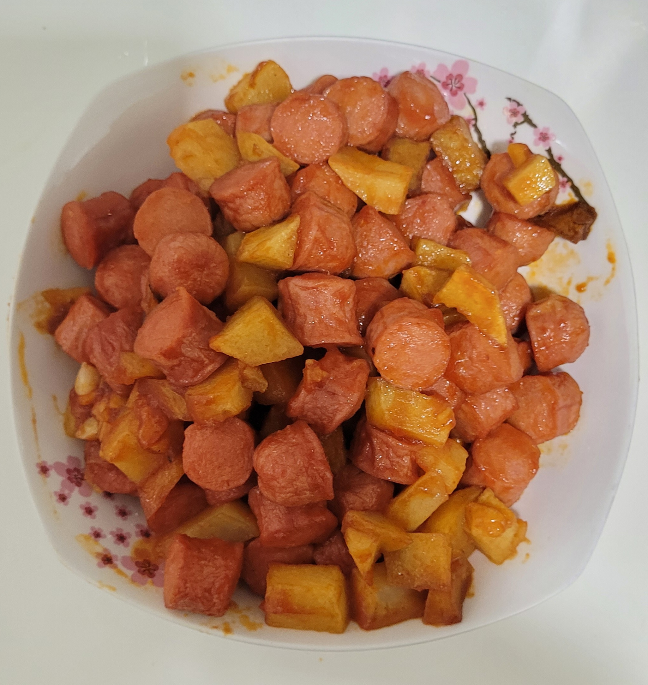

Ketchup Hotdog & Potatoes

Description
A sweet and savoury chinese-western fusion dish that is simple to make at home! Feel free to swap hotdogs with luncheon or spam.
Ingredients
Serving size: 4 people
- 1 clove garlic
- 6 hotdogs/luncheon/spam (cut into bite size)
- 2 potatoes (cut into cubes)
- 4 tbsp ketchup or (3 tbsp ketchup + 1 tbsp chilli)
- 1/2 tsp sugar
- 60ml water
Instructions
- Shallow fry potatoes till slightly brown & set aside
- Deep fry hotdogs till they float up & set aside
- Heat up 2 tbsp oil in wok and add garlic
- Turn up heat and add ketchup
- Add in sugar and stir in again to let it melt
- Add in water, Stir and let it bubble for 1-2 min on high heat
- Add hotdogs & potatoes then mix around with tomato sauce. Serve hot